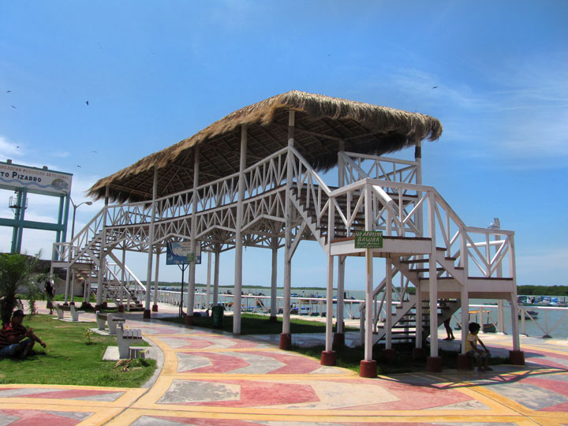

Malecón- Puerto Pizarro
Puerto Pizarro, Tumbes
Desde
S/ 65.00
Descripción del Atractivo
El Malecón de Puerto Pizarro es el punto de encuentro y el eje principal de la actividad turística en esta pintoresca caleta de pescadores. Es un espacio público diseñado para caminar frente al mar, disfrutar de la brisa marina y contemplar el paisaje donde el río se une con el océano.
¿Qué hacer en el Malecón?
- Feria de Artesanías: Compra recuerdos únicos elaborados por artesanos locales con conchas y restos marinos.
- Gastronomía Local: Disfruta de restaurantes rústicos al borde del malecón especializados en ceviche de conchas negras y majarisco.
- Mirador Turístico: Sube a las estructuras de madera para obtener las mejores vistas panorámicas y fotografías del área.
Recomendaciones para la visita
El acceso al malecón es libre durante todo el día. Se recomienda visitarlo por la tarde para disfrutar de los restaurantes locales y ver la puesta de sol desde el mirador principal.